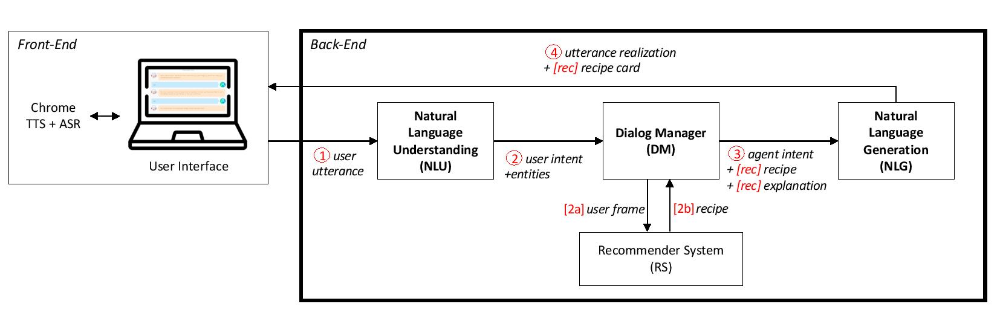

Who is Cora?
Cora is a COnversational Relational Agent developped by the ARTISAL Group at the University of Glasgow. Using cutting edge Artificial Intelligence techniques, Cora conversationaly assists her users by giving them personalized recommendations.
Cora is a recipe recommender system
A few decades ago, to get a recommendation, for example for a movie to watch or a new restaurant to try, people used to ask their friends. Nowadays, more often than not, people will turn to the web to get recommendations. Recommendation systems are everywhere, and even when you are not actively looking for a recommendation, many companies are using recommendation systems to present to you new products to buy (e.g. Amazon), or new friends to add to your network (e.g. Facebook, LinkedIn, etc.). Many web-based services heavily rely on their recommendation system, as if their recommendations are not good enough, people might stop using them (e.g. Spotify, Netflix, etc.). The recommendation algorithm is at the core of the success of such companies, who work hard to always make it better.
Cora is recipe recommendation system: her task-goal is to recommend a relevant recipe to her users. Thanks to a large recipe database collected from one of the most popular recipe websites, Cora is able to deliver good quality, personalized, and heathy recipe recommendations.
Cora is a conversational assistant
Conversational Assistants (CAs) are nowadays part of everyday life. Major tech companies all have their own assitants: Alexa for Amazon, Cortana for Microsoft, Siri for Apple, or Google Home for Google to cite a few. While these assistants do a tremendous job at carrying specific tasks such as for example setting a timer or getting tomorrow's weather, the social aspoects of conversation are somewhat left aside. Building a personal relationship with the user remains an open problem in the domain of Conversational Assistants.
Cora is using pioneering Artificial Intelligence techniques to solve this problem. While pursuing her task goal (i.e. giving a good recommendation to her users), she builds and maintains a social relationship with her users, which increases their satisfaction and the likelihood they will interact with her again. She does so by closely monitoring her interaction with her users. She understands what her user says, and then decides not only what to respond but also how to respond (i.e. which conversational strategy to use) to strengthen the relationship. Thanks to the bond she shares with her user, Cora is then better able to elicit the user's preferences and improve her recommendations.
What does Cora do?
Cora assists her users by giving them personalized recipe recommendations through a conversation. Cora has two goals to fulfil: a task goal to recommend a recipe, and a social goal to establish and maintain a relationship with her users. Indeed, research has shown that building rapport is critical for a conversational assistant, as it will influence not only the user's satisfaction with the system, but also the user's appreciation of the recommendation. One way to build rapport through a conversation is by using appropriate conversational strategies. For example, it has been shown that reciprocal agreement (e.g. I'm hungry too!) tends to increase the level of rapport. A high level of rapport will also help to make the user comfortable sharing their preferences, which is essential for giving a good recommendation.
Therefore, when Cora receives a message from her user, she selects an answer that will help to maximize the user's satisfaction with the recommendation (i.e. fulfilling her task goal) and with the system (i.e. fulfilling her social goal).
How does Cora work?
The front-end of the Cora system is composed of a webpage through which the users can connect to our server and chat with Cora. This front-end is developed in Pug, a high performance and rich templating engine for writing HTML, and JavaScript.
The back-end (server) of the Cora system is written in Python. The server is in charge of creating a new Cora-agent for every new client connection, so that every user has their own dedicated Cora-agent. The server supports multiple parallel interactions and is responsible for routing the messages between users and their respective Cora-agents.
Every Cora-agent is composed of three modules that allow Cora to carry a social interaction with her user. These modules are 1) a Natural Language Understanding module (NLU), which is in charge of making sense of what the user is saying, 2) a Decision Manager module (DM), which decides on an action to take (i.e. the idea that Cora's next message has to convey or Cora's communicative intention) and 3) a Natural Language Generation Module, which expresses in natural language the communicative intention selected by the DM.
Extra modules can be plugged in to the system, for example in the context of recipe recommendation, a Recommender System (RS) that would be in charge a finding a recipe corresponding to the user’s preferences.
Understanding the user (NLU)
The role of the NLU is to extract from the user's message a communicative intention. For example, in the context of recipe recommendation, sentences like I want to eat salmon, Something with salmon please or I have salmon in my fridge that I'd like to cook tonight all correspond to the same communicative intention intent: request, entity_type: food, entity: salmon. Understanding natural language is a hard problem that still remains open. In the Cora system, we tackle this problem by building a rule-based classifier. This classifier relies on machine-learning based Python libraries like Spacy, Stanford CoreNLP and TextBlob. Those libraries are used for lemmatization, Part-Of-Speech tagging (POS tagging), dependency parsing and Named Entity Recognition (NER). Our classifier uses these features combined with a food-vocabulary database to extract the user's communicative intention from the user's utterance.
Making a decision (DM)
Given the user's communicative intention, Cora has to select her next communicative intention. This is the DM's role. She does so by using a finite state machine (FSM – a graph of nodes called states and arrows called transitions connecting those states) in which the states correspond to Cora's communicative intentions (i.e. Cora's actions) and the transitions correspond to the user's communicative intentions (i.e. the user's actions). This FSM is designed so that Cora will reach her goal of giving a good recommendation to the user.
The DM is also in charge of requesting information from other modules when needed. For example, when the selected communicative intention is intent: recommend, entity_type: recipe, entity: #recipe , the DM is in charge of contacting the Recommender System module to get a recipe recommendation.
Answering to the user (NLG)
The NLG receives a communicative intention from the DM that has to be “translated” in natural language. Just as several natural language sentences can correspond to the same communicative intention, one communicative intention can be translated into multiple natural language sentences. For example, with the communicative intention intent: recommend, entity_type: recipe, entity: #recipe, all the following sentences are equally good: I recommend #recipe, I think you will like it, or What do you think about #recipe? It has salmon in it just as you asked! or #recipe seems perfect for you as it contains salmon. As the way one communicates can strongly influence on the relationship they build with their interlocutor, Cora is able to use different conversational strategies (such as self-disclosure, praise, etc.) in order to reach her social goal of building rapport with her user.
Recommending an item (RS)
At the core of the recommendation process lies the Recommender System. Cora’s recommender system follows a hybrid approach, combining Knowledge-Based techniques (KB) with Collaborative Filtering (CF). A KB recommender system finds an item to recommend to the user according to preferences that the user has specified. As Cora works as a conversational agent for recipe recommendation, she first asks questions to her users to understand their tastes and needs. These preferences are used to make a first selection of recipes. This set of recipes if then post filtered using CF techniques. This allows the RS to rank the recipes according to criteria that the user may not be aware of or that are difficult to communicate. Indeed, CF recommender systems rely on users’ past behaviour: in the context of recipe recommendation, a user profile is built with the recipes the user ui has already cooked and rated. Then the RS tries to find another user uj with a similar profile and recommends to ui a recipe that uj liked. While the results of CF are difficult to interpret, it can pick up on patterns that would be completely overlooked otherwise (e.g. user ui likes recipes with colourful pictures). By combining these two techniques, Cora is able to give useful, relevant and personalized recipe recommendations.
Research questions explored with Cora
Researchers in the ARTISAL group are interested in the following research question: how can we help people to eat healthier food? As a matter of fact, unhealthy eating behaviour is a world-wide problem, with consequences such as obesity, diabetes, or tooth decay. Healthy eating implies complex decision-making processes including being aware of healthy options and choosing among them. Cora’s purpose is therefore to develop strategies that can influence people’s decision regarding food towards healthier options.
Two main strategies have been explored with Cora. The first one is to directly manipulate the recommendation process: what happens if instead of recommending what best matches the user’s preferences, Cora recommends something slightly healthier? How can we balance the users’ preferences with the healthiness of the recipes to make a good recommendation?
The second axis of research focuses on persuasion techniques that can be used to influence people towards healthier recipes. For example, is it better to recommend just a healthy recipe to the user, or compare a healthy recipe with a less healthy one? Should Cora just say that one recipe is better than the other, or should she explain her recommendation to convince the user to select the healthy option? Or should she just say nothing?
The research conducted with Cora has been published in several conferences:
Florian Pecune, Lucile Callebert, Stacy Marsella, A Recommender System for Healthy and Personalized Recipes Recommendations, 5th Workshop on Health Recommender Systems, Rio de Janeiro – Brazil, 2020
Florian Pecune, Lucile Callebert, Stacy Marsella, A Socially-Aware Conversational Recommender System for Personalized Recipes Recommendations, 8th International Conference on Human-Agent Interaction (HAI), Syndey – Australia, 2020
Florian Pecune, Lucile Callebert, Stacy Marsella, Un système de recommandation social pour des recommandations personnalisées de recettes, Workshop sur les Affects, Compagnons Artificiels et Interactions (WACAI), île d’Oléron, France, 2020/2021
Members
Principal investigator: Florian Pecune
Research programmer: Lucile Callebert